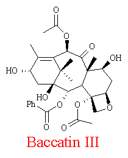
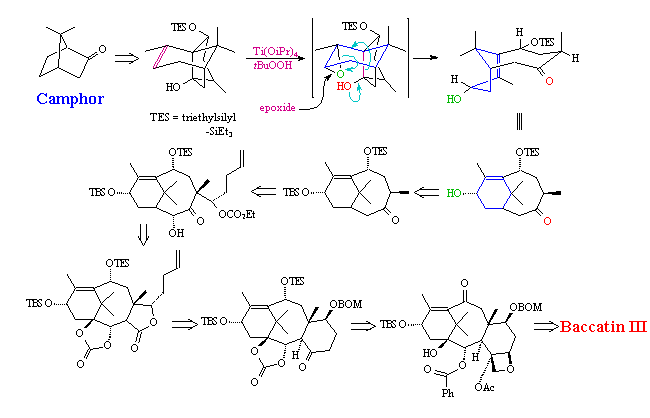
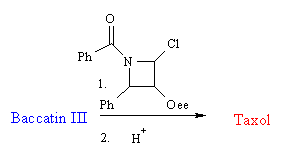
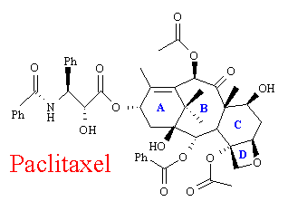
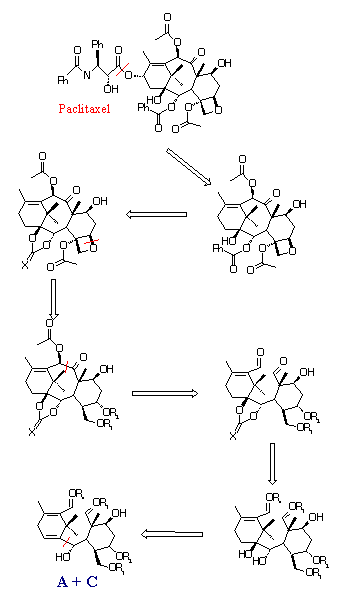
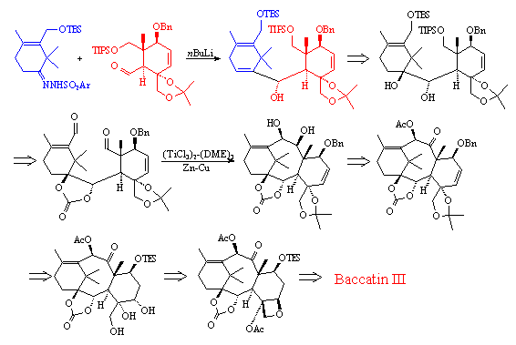

- The first, is the synthesis of Bacatin III from camphor - (see above) This is a fully linear process that simply involves the addition of functional groups and the forming and closing of the various rings.
- The second part, is the addition of the side chain - (see right). This can been done in a number of ways. The Holton group used the addition of a beta lactam, followed by desilylation and the removal of excess groups.
Synthesis of Taxol
The total synthesis of Paclitaxel in the laboratory, without the use of any precursors extracted from plants, has stood for over 20 years as a major challenge to organic chemists. Rings of this size are notoriously difficult to form, owing to an unfavourable entropy factor and if the molecule is to be biologically active, then it's structure must be exactly correct. The large number of chiral centres does not exactly help.

Early in 1994, two total synthesis were reported. These were by groups headed by; Robert Holton from Florida State University and K. Nicolaou of the Scripps Research Institute.
The strategies used are different, the Holton group uses a linear synthesis based on camphor, whilst the Nicolaou group uses a convergent method - making the rings separately and then joining them together. The first method gives a better yield (about 4-5%) but the Nicalaou synthesis is more flexible, allowing the synthesis of a wide range of similar Taxoids. In both cases, the method is aimed towards the synthesis of Baccatin III - which then has a sidechain added, in a similar fashion to the semi synthesis of Paclitaxel and Docetaxel discussed earlier.(14)
Both the synthesises are very complex and a full reaction pathway is beyond the scope of this project. However, I have included a synopsis of each strategy and where the full pathway can be found.(2)
Holton Synthesis

The Holton synthesis can be split into two parts;

The full strategy can be found in the Journal of the American Chemistry Society 1994, vol 116, pp 1597-1600 - Received December 21, 1993(12)
Nicolaou Synthesis
|
 Nicolaou used a convergent synthesis. He makes rings A and C separately (see above for ring labels) and then stitches them together to form a A+C system and forming the B ring. After separation of the enantiomers, it is then a fairly simple task to add on the oxetane D ring. This, as before, results in Baccatin III, which is converted into Taxol in a way similar to the Holton synthesis. The Nicolaou group were aiming for a short, flexible route to allow the production of the natural product as well as a variety of it's analogues. To the left and below, can be seen the retrosynthetic analysis used as a basis of the synthesis. As can been seen. the analysis breaks Taxol down into a handful of simple chains and rings. These then become the reactants used in the synthesis. The full strategy can be found in the Journal of the American Chemistry Society vol 117, No. 2 1995 pp 625-659 Received July 7 1994(13) |
 |
| Left: The full retrosynthetic analysis of Taxol, as used by the Nicolaou group. The reaction strategy used (below) is basically the reverse of the retrosynthesis. |

 Next
Page: Recent
Work - on Taxoids
Next
Page: Recent
Work - on Taxoids